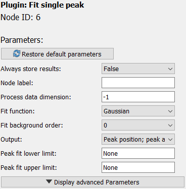

Workflow edit frame#
The WorkflowTree can
be visualized and edited in the Workflow edit frame. The starting layout of the
frame is shown below.
{kind=link}
- I/O buttons
Buttons for importing and exporting the workflow are situated here.
- Workflow tree canvas
This is the area where the visualization of the
WorkflowTreeand itsWorkflowNodes.
- PluginBrowser
This widget displays all available Plugins in the PluginCollection on the left as well as a description of the selected plugin on the right.
- Plugin parameter edit area
Once a Plugin has been added to the WorkflowTree, its Parameters can be edited here after selecting the respective plugin.
Plugin browser#
The Plugin collection presenter consists of two parts. On the left, it will show
all Plugins which have been registered with the PluginCollection (for more information
about how paths are managed, please refer to PluginCollection).
On the right, it shows detailed information about the selected plugin:

A filter can be selected at the top of the left part to display only plugins with matching names.
A single click on a Plugin’s name on the left will show more information about the selected Plugin on the right. This information included the description, a full list of Parameters, the input and output data dimensions as well as further programmatic information (class name and plugin type).
A double click on a Plugin’s name will append a new instance of the Plugin to
the WorkflowTree.
The new instance will always be appended to the currently active Plugin (or it
will become the new root Plugin if the Tree is empty).
Left-clicking on a Plugin name will open a context menu with additional options:
The user can replace the active node, append a new WorkflowNode to the active node or append to a specific
node. The Append to a specific node menu entry will open a new sub-menu with
a list of all nodes in the WorkflowTree.
Tip
Adding a new node to the WorkflowTree will also activate that node.
To make a branching tree, you will need to activate the original node again after adding the first new node.
Workflow tree canvas#

The image above shows an example WorkflowTree visualization. Each plugin is
depicted in a box with its node number and name and connections between nodes
are displayed with lines. The color and frame indicate the status of the
selected WorkflowNode:
- Blue background, bold frame
The currently selected, active
WorkflowNode
- Grey background, regular frame
A consistent
WorkflowNodein theWorkflowTree; not currently selected.
- Red background
An inconsistent
WorkflowNodein theWorkflowTree: The input data dimension of the node’s plugin do not match the output data dimension of its parent.
- Red background, bold frame
An inconsistent
WorkflowNodewhich has been selected as active node.
By clicking on a plugin, this plugin gets selected and is highlighted (bold border and change in background color). In addition, the Plugin Parameter editing widget will display the selected plugin’s Parameters.
Removing nodes from the WorkflowTree#

Clicking on the x button in the top right corner of a
WorkflowNode widget will open a
context menu to delete the current node or branch:
- Delete this node
Using this option will remove only the current node and connect the node’s children with the node’s parent.
- Delete this branch
This option will delete the current node and all its children (recursively).
Rearranging nodes in the WorkflowTree#
The Workflow tree canvas supports rearranging WorkflowNodes by drag & drop: Click and hold a node and move
it on another plugin, then release. This will make the dropped node a child of
the node on which it was dropped. All of the dragged node’s children will be
moved as well.
Plugin Parameter editing#
After selecting a Plugin in the Workflow tree canvas, the Plugin Parameter editing widget will be updated with the information from the selected Plugin. The first two lines are the plugin name and the node ID.
The “Restore default Parameters” button can be used to reset all of the active plugin’s Parameters to their defaults.
Below, all of the Plugin’s Parameters are listed. Please refer to the Editing Parameters in the GUI manual on how to change these.
All Plugins have two generic Parameters: keep_results and
label. By default, pydidas only stores results of workflow leaves,
i.e. if a WorkflowNode does not
have any children. When keep_results is set to
True, pydidas will store this node’s results irrespective of its
position in the WorkflowTree.
The label allows the user to give the plugin a reference name. This
name will be used as identifier when displaying or exporting data.
Tip
When saving Workflow results, the filenames will be in the format
node_<node ID>_<label>_<plugin_class>.<extension>
where all placeholders in <> brackets will be replaced by values. Users are therefore encouraged to select meaningful labels for their Plugins and to make a note of the plugin node IDs.
Some plugin have additional advanced Parameters, which can be edited after clicking the “Display advanced Parameters” button at the bottom of the list.
Also, some plugin have unique Parameter editing widgets which might have additional functionality or logic. For example, pyFAI integration plugins have the option to select the integration region graphically buttons are added to use this functionality.
Import and Export#

Workflows can be imported and exported using the respective buttons in the top left corner of the frame. Both buttons will open a file selection dialogue and have filters implemented to allow only supported file types and extensions.
Using the WorkflowTree#
The WorkflowTree
is used automatically by pydidas to run processing workflows. The user does not
need to access it directly.